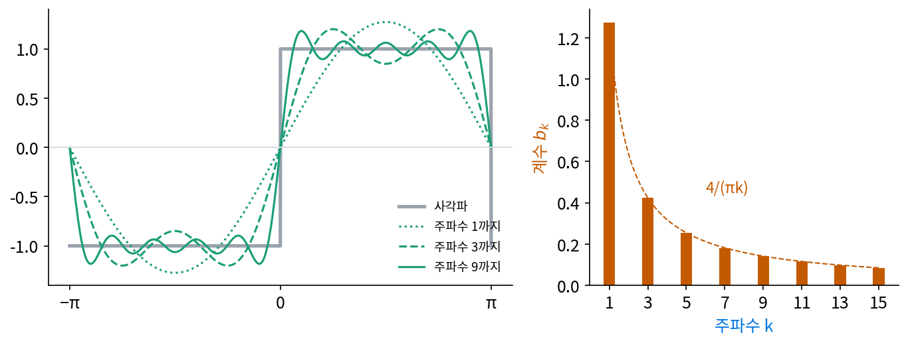
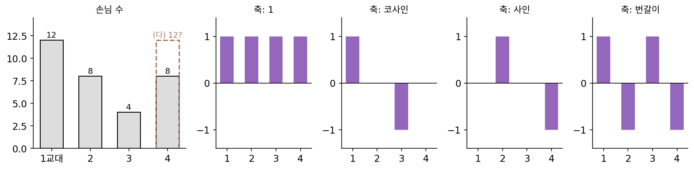
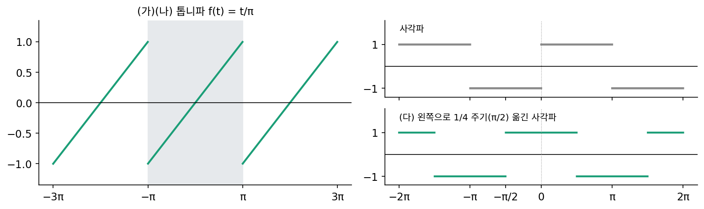
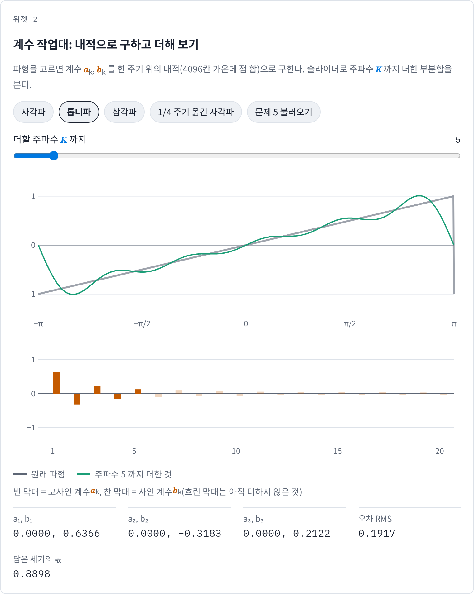
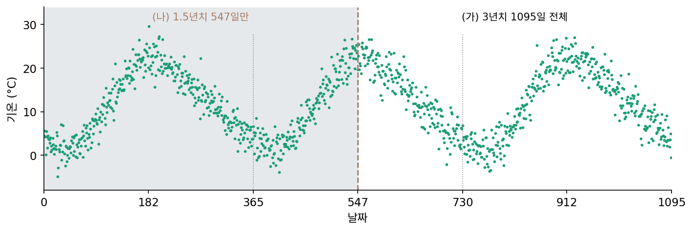

푸리에 계수: 내적으로 하나씩 구하기
1과 cos kt, sin kt가 서로 수직인 축이라는 것을 보았다. 그러면 사각파처럼 반 주기는 −1, 반 주기는 +1인 함수가 이 축들 위에서 어떤 좌표를 갖는지 구할 수 있을 것이다. 축이 끝없이 많으니 연립방정식을 풀어서는 끝이 나지 않는다. 축이 서로 수직이면, 칸 세 개짜리 신호 때처럼 축마다 내적 한 번으로 좌표 하나를 따로 구할 수 있을까?
역사: 곱의 넓이를 재는 기계
물결을 더하는 조수 예측기를 만든 톰슨은 거꾸로 된 일, 곧 기록된 물때 곡선에서 성분마다의 크기를 구하는 일에도 기계를 쓰고 싶었다. 그 일의 핵심은 기록 곡선과 cos(2πt/주기)의 곱을 한 주기 넘게 넓이로 재는 것이었다. 1876년 형 제임스 톰슨(James Thomson)이 원판 위를 구르는 공으로 넓이를 재는 적분기를 왕립학회에 내놓았고, 같은 해 톰슨은 「주어진 두 함수의 곱의 적분을 계산하는 기구에 관하여」라는 논문을 냈다. 1878년 왕립학회 회보에 실린 그의 조화 분석기는 이런 적분기 다섯 개를 이어, 종이 원통에 감긴 기록 곡선을 따라가는 동안 ∫ y cos dt와 ∫ y sin dt의 값을 쌓았다. 물결을 더하는 기계 옆에 곱의 넓이를 재는 기계가 생겼다.
모서리가 있는 함수까지 사인과 코사인의 합으로 쓸 수 있다는 주장은 1807년 푸리에(Joseph Fourier)가 열이 퍼지는 문제를 풀며 내놓았다. 이 주장은 곧바로 받아들여지지 않았고, 어떤 함수에서 맞는지를 두고 논쟁이 이어졌다.

곱의 넓이를 재는 거면 적분 한 번이잖아요. 그걸 하려고 기계까지 만들었다는 게 좀 의외예요.

그 기록 곡선에 식이 있나요?

아… 종이 원통에 그려진 곡선이라 식이 없네요. 넓이를 재려면 칸을 잘게 나눠 높이를 읽고, 칸마다 cos 값을 곱해서 더해야 해요.

지금이면 기록을 숫자 배열로 받아서 곱하고 더하는 코드 한 줄인데요.

그때는 기록이 숫자 배열로 남지 않았어요. 기록은 원통 종이 위의 곡선이었고, 숫자로 바꾸려면 사람이 눈금을 하나하나 읽어야 했죠. 그래서 공이 원판 위를 구르며 곡선을 따라가는 동안 넓이가 저절로 쌓이게 만든 거예요.

적분기가 다섯 개면 한 번 돌릴 때 넓이 다섯 개를 얻는 거네요. 성분이 많으면 몇 번이고 다시 돌려야겠고요.

그런데 기계가 쌓은 ∫ y cos dt 하나가 성분 하나의 크기만 알려 준다고 믿으려면, 무엇이 보장돼야 할까요?

다른 물결과의 곱은 넓이가 0이어야 해요. 그러면 넓이 하나에서 그 성분만 남는데… 남은 넓이를 무엇으로 나눠야 계수 그 자체가 되죠?
사각파의 계수를 내적으로
사각파 f(t)가 다음처럼 적힌다고 해 보자.
f(t) = (a₀/2) + a₁ cos t + b₁ sin t + a₂ cos 2t + b₂ sin 2t + …
양쪽에 sin 3t를 곱하고 한 주기 위에서 넓이를 내면, 오른쪽의 항들 가운데 sin 3t와 수직이 아닌 것은 b₃ sin 3t 하나뿐이다. 나머지는 모두 0이 되고, b₃ sin 3t × sin 3t의 넓이는 b₃ × π다. 그러니
b₃ = (1/π) × (f와 sin 3t의 내적)
이고, 끝없이 많은 미지수 가운데 b₃ 하나만 남았다. 사각파는 0 < t < π에서 +1, −π < t < 0에서 −1이므로 넓이를 손으로 구할 수 있다. 0에서 π까지 sin 3t의 넓이는 2/3, −π에서 0까지 −sin 3t의 넓이도 2/3이라 합이 4/3이고, b₃ = 4/(3π) = 0.4244다. 같은 계산을 컴퓨터로 한 주기를 20만 칸으로 나눠 해 보면 아래와 같다.
| 주파수 k | 1 | 2 | 3 | 4 | 5 | 6 | 7 | 9 |
|---|---|---|---|---|---|---|---|---|
| 코사인 계수 aₖ | 0 | 0 | 0 | 0 | 0 | 0 | 0 | 0 |
| 사인 계수 bₖ | 1.2732 | 0 | 0.4244 | 0 | 0.2546 | 0 | 0.1819 | 0.1415 |
코사인 계수는 모두 0이고, 사인 계수는 홀수 주파수에서만 4/(πk)다. 사각파를 원점 둘레로 뒤집으면(t를 −t로) 부호만 바뀌는데, 코사인은 뒤집어도 그대로이고 사인은 부호가 바뀌므로 코사인 계수가 0일 수밖에 없다. 짝수 주파수가 왜 하나도 없는지는 아래 문제 5에서 톱니파와 비교해 본다.

이렇게 주기 함수를 한 주기 위의 직교 기저 1, cos kt, sin kt로 적은 것을 푸리에 급수 (주기 함수를 물결의 합으로 펼치기 / Fourier series)라 한다. 계수는 축마다 내적 한 번에 축의 길이 제곱(π, 상수 축은 2π)으로 나눈 값이다.
주파수 K까지만 더한 것을 부분합이라 부르자. 사각파의 부분합이 원래와 얼마나 다른지를 제곱 오차 평균의 제곱근(RMS)으로 재면, K = 1에서 0.4352, 9에서 0.2010, 101에서 0.0630으로 준다. 축이 서로 수직이므로 세기도 축마다 따로 더해진다. 사각파의 제곱 평균은 1이고, 축 하나가 담은 세기는 bk²/2다. 주파수 1 하나가 (4/π)²/2 = 0.8106, 9까지가 0.9596, 101까지가 0.9960을 담는다. 계수를 하나 더할 때 이미 구한 계수를 고칠 일이 없다는 것도 축이 수직인 덕분이다.
ML에서: 시계열의 계절 성분
메타가 공개한 시계열 예측 라이브러리 프로펫(Prophet, 테일러·레덤 「Forecasting at Scale」 2018)은 해마다 되풀이되는 계절 성분을 1년을 한 주기로 하는 푸리에 급수로 적는다. 공개된 코드의 기본값은 1년 주기에 주파수 10까지, 1주 주기에 주파수 3까지다. 주파수를 올리면 계절 모양을 더 날카롭게 따라가지만 노이즈까지 따라갈 위험이 커진다. 계수는 회귀로 맞추는데, 자료가 몇 년치를 고르게 덮으면 그 회귀가 내적 한 번씩으로 계수를 구하는 일과 같아진다. 「몇 년치를 고르게」라는 단서가 왜 붙는지는 아래 문제 6에서 본다.
문제 4. 카페 손님의 교대별 물결
카페 하루를 4교대로 나눠 손님 수를 셌더니 (12, 8, 4, 8) 이었고 날마다 같다. 칸 4 개짜리 축으로 1 = (1, 1, 1, 1), 코사인 = (1, 0, −1, 0), 사인 = (0, 1, 0, −1), 번갈이 = (1, −1, 1, −1) 을 쓴다. (가) 네 축이 서로 수직인지 확인하라. (나) 축마다 계수(내적 ÷ 축 길이의 제곱)를 구하라. (다) 넷째 교대가 12 명으로 바뀌면 계수는 어떻게 되는가?

(가)는 쌍마다 곱의 합을 보면 다 0이에요. (나)는 내적만 하면 되니까 1 축은 32, 코사인 8, 사인 0, 번갈이 0이요. 손님 = 32 + 8 × 코사인… 32명이 평균일 리가 없는데요.
축의 길이를 보세요. (1, 1, 1, 1)과 (1, 0, −1, 0)은 길이가 같은가요?

1 축은 자기 내적이 4, 코사인은 2예요. 나눠야 하네요. 1 축 계수 8, 코사인 4요. 손님 = 8 + 4 × 코사인이고, 확인하면 8 + 4 = 12, 8 + 0 = 8, 8 − 4 = 4, 8이에요. 맞아요.
사각파에서 계수를 구할 때 1/π를 곱한 것도 같은 거네. sin kt의 자기 내적이 π라서. 상수 축만 2π라서 a₀를 반으로 나눠 적는 거고.
(다)는 넷째만 바뀌었으니 계수 하나만 바뀌겠지?
넷째 칸이 0이 아닌 축이 몇 개인지 세어 볼래요?
넷째 칸이 1 축은 1, 코사인 축은 0, 사인 축은 −1, 번갈이 축은 −1… 세 개예요. 하나만 바뀌는 게 아니네요.
그럼 계수를 다시 구해 볼래요?
손님이 (12, 8, 4, 12)니까… 1 축 9, 코사인 4 그대로, 사인 −2, 번갈이 −1이에요.
칸 하나가 바뀌면 거기서 0이 아닌 축들의 계수가 모두 조금씩 바뀌는구나. 반대로 계수 하나를 바꾸면 모든 칸이 바뀌고.

알바 시간표 짤 때 평균 손님에 「점심 물결」만 얹으면 되는 줄 알았는데, 마감 교대 하나만 붐벼도 물결 셋이 다 움직이네요.
문제 5. 톱니파와, 옮긴 사각파
(가) 톱니파 f(t) = t/π (−π < t < π, 그 뒤로 되풀이)의 사인 계수 b₁, b₂, b₃ 를 내적으로 구하라. 코사인 계수는 왜 0 인가? (나) 사각파와 달리 짝수 주파수가 살아남는 것은 왜인가? (다) 사각파를 왼쪽으로 1/4 주기(π/2) 옮긴 파형의 계수는 어떻게 되는가? (위젯 2의 「문제 5 불러오기」와 「1/4 주기 옮긴 사각파」 단추로 확인해 보자.)


(가)는 t/π와 sin kt의 곱이니까 부분적분부터 해 볼게. ∫ (t/π) sin kt dt를 −π에서 π까지 하면 −(t/π)(cos kt)/k를 양 끝에서 계산한 것과 ∫ (cos kt)/(πk) dt가 나와.
뒤쪽 적분은 cos kt 를 적분한 거니까 한 주기에서 0이지?
응. 남은 건 양 끝에서 계산한 −(t/π)(cos kt)/k인데… cos kπ가 (−1)^k라서 2(−1)^(k+1)/k가 돼.
계수가 되려면 무엇이 남았죠?
π로 나눠야 해요. bₖ = 2(−1)^(k+1)/(πk)라서 b₁ = 0.6366, b₂ = −0.3183, b₃ = 0.2122예요. 코사인 계수는 t/π를 뒤집으면 부호가 바뀌니까 0이고요.
위젯에서 확인하니 똑같아요. (나)는… 톱니파는 그냥 그렇게 생겼으니까요?
사각파는 반 주기 밀면 어떻게 되죠? 톱니파도 밀어 보세요.
사각파를 π만큼 밀면 +1과 −1이 바뀌어서 정확히 부호만 뒤집혀요. 톱니파는… 밀어도 부호가 뒤집힌 모양이 안 나와요.
왜? 톱니파도 −1과 1 사이를 오가잖아.
뒤집힌 톱니파는 기울기가 −1/π 여야 하는데, 밀기만 해서는 기울기가 1/π 에서 바뀌지 않으니까.
그럼 sin 2t와 sin 3t를 π만큼 밀면 각각 어떻게 되죠?

sin 2t는 그대로고 sin 3t는 부호가 뒤집혀요. 반 주기 밀어 부호가 뒤집히는 함수에는 부호가 뒤집히는 물결, 곧 홀수 주파수만 들어갈 수 있어요. 톱니파는 그런 대칭이 없으니 짝수도 들어가는 거고요.
(다)는 옮겼으니 계수가 완전히 달라질 것 같아요. 그런데 위젯을 보니 사인 계수가 다 0이 되고 코사인 계수가 1.2732, 0, −0.4244, 0, 0.2546이에요. 크기는 그대로네요.
크기는 그대로이고 사인 축에서 코사인 축으로 옮겨 갔어요. 부호는 왜 번갈아 바뀔까요?
하나씩 넣어 볼게요. sin k(t + π/2)를 풀면 k = 1이면 cos t, k = 3이면 −cos 3t, k = 5면 cos 5t예요.

그래서 1.2732, −0.4244, 0.2546으로 부호가 번갈아 나왔구나.
주파수마다의 세기 aₖ² + bₖ²는요?
그대로예요. 옮기면 같은 주파수 안에서 사인 계수가 코사인 계수로 넘어가기만 해요.

회전 행렬로 좌표를 돌리면 성분은 바뀌어도 길이는 그대로인 것과 같아. 주파수마다 평면 하나씩 있고 그 안에서 돌린 거야.

문제 6. 기온 자료에서 연 주기 성분 뽑기
하루 기온 3 년치(1095 일)를 직접 만들었다. 참 모델은 12 − 10 cos(ω − 0.35) + 1.5 cos(2ω + 0.8)(ω = 2π × 날짜/365)이고, 표준편차 2.5 인 노이즈를 더했다(씨앗 1). (가) 평균과 주파수 3 까지의 계수를 내적(2 × 평균(기온 × cos kω) 등)으로 구한 값과 최소제곱 회귀로 구한 값을 비교하라. (나) 1.5 년치(547 일)만 쓰면 두 방법의 a₁, b₁ 이 어떻게 되는가? 참 값은 a₁ = −9.394, b₁ = −3.429 이다. (다) 왜 그렇게 되는지 특징의 내적 행렬로 설명하라.

(가)는 둘 다 돌려 봤어요. 평균 11.848, a₁ = −9.494, b₁ = −3.213, a₂ = 1.068, b₂ = −1.153이고, 두 방법의 차이가 4 × 10⁻¹⁵예요. 같은 거네요. 그러면 회귀를 굳이 할 필요가 없겠어요. 내적이 훨씬 빠르니까요.
(나)를 돌려 보고 다시 말해 볼래요?
1.5년치로 하면 최소제곱은 a₁ = −9.302, b₁ = −3.161로 참 값 근처인데, 내적은 a₁ = −9.557, b₁ = +1.720이에요. b₁은 부호까지 틀렸어요. a₂, b₃도 엉망이고요.
(다)는 1.5년치에서 [1, cos ω, sin ω]의 내적 행렬을 날 수로 나눠 볼게. 대각선은 1, 0.5, 0.5인데… 1과 sin ω 사이가 0.212야. 0이 아니야.

3년치면 0이었잖아. 왜 1.5년이면 안 돼?
1년 반은 sin ω를 한 번 반 되풀이하니까 반쪽 물결이 남아서 평균이 0이 안 돼.

그래요. 문제 1(깜빡이는 전등 둘)에서 3초만 보면 곱의 평균이 −1/3 로 나오던 것과 같은 이유예요. 축이 서로 수직이 아니면 내적 하나로 계수 하나를 구할 수 없어요. 연립방정식을 다 풀어야 하죠.
평균 기온이 12도인데, 그 일부가 sin ω 축으로 새어 들어가서 b₁을 끌어올린 거네요. 회귀는 축끼리 기울어진 것까지 셈에 넣으니 sin ω 축으로 새어 든 평균 기온을 바로잡고요. 그래서 라이브러리는 내적 대신 회귀로 맞추는구나. 자료가 정수 년을 덮을 거라는 보장이 없으니까요.

실험 보고서에서 한 달 반 데이터로 「월 주기」를 뽑았다가 이상한 값이 나왔던 게 이거였어요. 다음엔 최소제곱 회귀로 할게요.